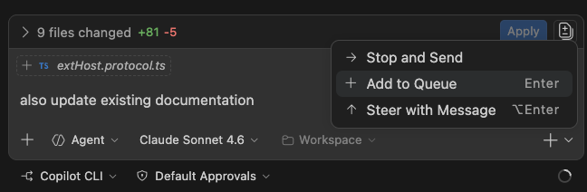
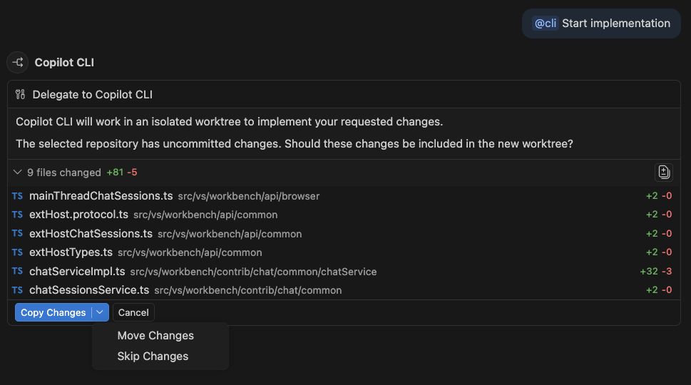
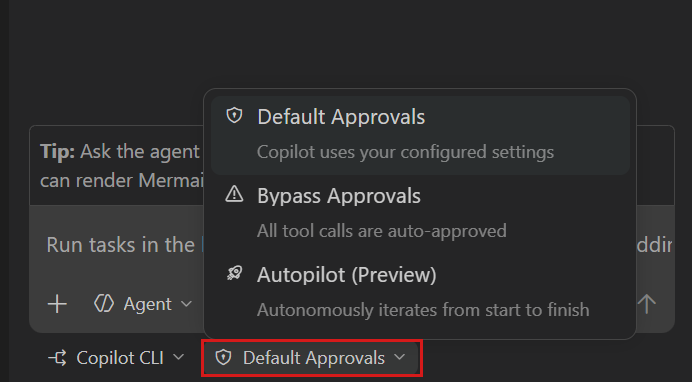
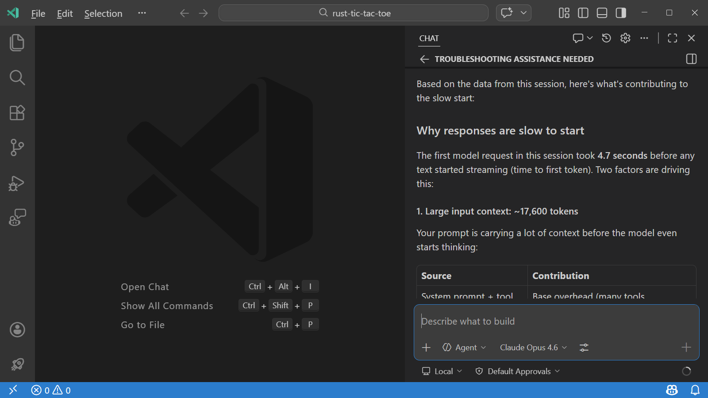
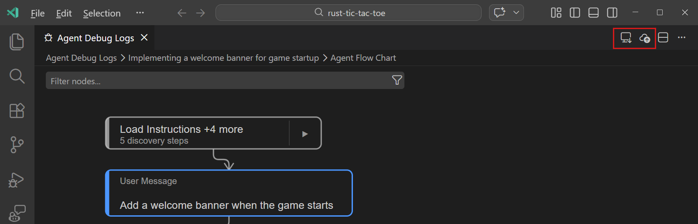
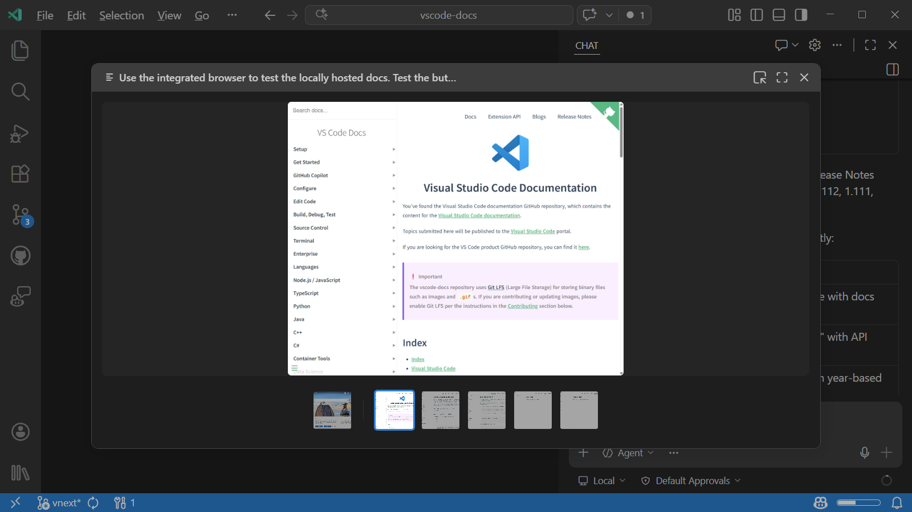
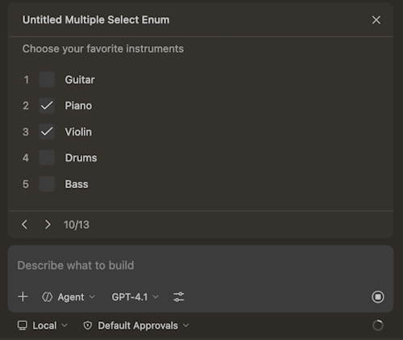
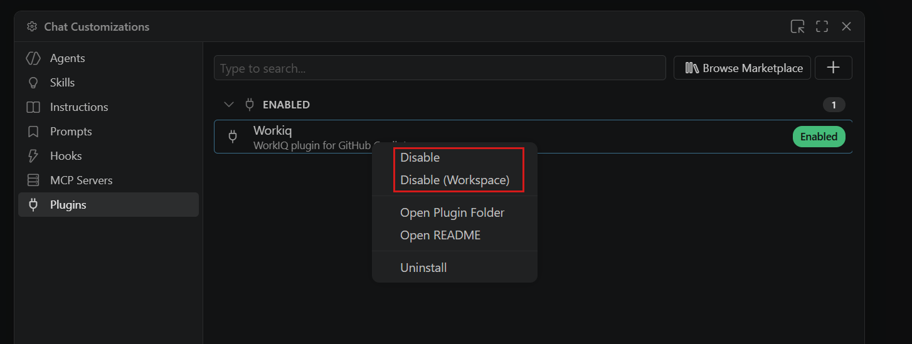
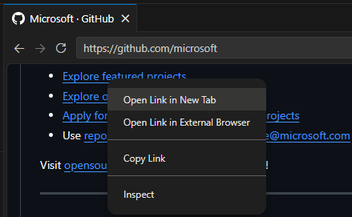

Visual Studio Code 1.112
_发布日期：2026年3月18日_
欢迎来到 Visual Studio Code 1.112 版本。此版本在智能体和开发者体验方面带来了多项改进。
- 集成浏览器调试：无需离开 VS Code 即可端到端调试 Web 应用。
- Copilot CLI 权限：赋予 Copilot CLI 会话更多自主权，以更少的中断完成任务。
- MCP 服务器沙箱：在沙箱中运行本地 MCP 服务器，限制其对机器的访问范围。
- 智能体图像支持：直接在智能体对话中使用屏幕截图、图表和二进制文件。
- Monorepo 自定义：在 monorepo 的所有包之间共享智能体指令和技能。
祝编码愉快！
VS Code 正在逐步向所有用户推出。使用 VS Code 中的检查更新立即获取最新版本。
要尽快体验新功能，请下载每日 Insiders 构建版本，其中包含最新的更新内容。
智能体体验
赋予智能体更多自主权、更丰富的上下文和更便捷的诊断能力，使其能够以更少的人工干预处理复杂任务。
Copilot CLI 中的消息引导和排队
在本地智能体会话中，你可以在上一个请求运行期间发送消息，以引导智能体提供不同的响应或排队发送后续消息。此版本为 Copilot CLI 会话添加了消息引导和排队的支持。

在文档中了解更多关于消息引导和排队的信息。
在委托给 Copilot CLI 之前预览更改
当工作区中有未提交的更改并尝试将任务委托给 Copilot CLI 时，你可以选择在 Copilot CLI 为会话创建的工作树上复制、移动或忽略这些更改。但是，你之前需要在做出决定之前检查源代码管理视图，以查看这些更改的内容。
在此版本中，聊天视图现在会显示待处理的更改列表，使你更容易在委派给 Copilot CLI 时查看哪些内容可以迁移到所创建的工作树中。

Copilot CLI 终端输出中的可点击文件链接
设置：setting(github.copilot.chat.cli.terminalLinks.enabled)
终端的文件链接检测现在能够识别由 Copilot CLI 生成的引用 ~/.copilot/session-state/ 目录下文件的路径。在此之前，这些路径无法正确解析，因为内置的链接检测器不了解 Copilot CLI 的 session-state 目录结构。
链接检测器现在可以处理绝对路径和相对路径：绝对路径和以波浪号开头的路径可直接打开，而相对路径则相对于活动 session-state 目录解析，并回退到工作区文件夹。
此功能默认启用，可通过 setting(github.copilot.chat.cli.terminalLinks.enabled) 设置切换。
Copilot CLI 中的权限级别
设置：setting(chat.autopilot.enabled)
你可以为聊天中的本地智能体会话配置权限，以赋予智能体在执行操作时更多自主权，减少批准请求的次数。此版本也为 Copilot CLI 会话添加了此功能。
对于 Copilot CLI 会话，你可以选择以下权限级别：
默认权限：使用你配置的批准设置。需要批准的工具在运行前会显示确认对话框。绕过批准：自动批准所有工具调用，不显示确认对话框，并在出错时自动重试。Autopilot：（在 Insiders 中默认启用）自动批准所有工具调用，自动回答问题，并持续自主工作直到任务完成。通过setting(chat.autopilot.enabled)设置启用 Autopilot。

在我们的文档中了解更多关于 Autopilot 和智能体权限的信息。
使用 /troubleshoot 排查智能体行为（预览）
设置：setting(github.copilot.chat.agentDebugLog.enabled)、setting(github.copilot.chat.agentDebugLog.fileLogging.enabled)
VS Code 中提供了多种智能体自定义选项。如果聊天智能体的行为不如预期，理解原因可能很困难。例如，当指令、技能或智能体未正确应用时，或当响应意外缓慢时。
为此，我们引入了一个新的 /troubleshoot 技能，它直接在对话中分析智能体调试日志，并提供有关智能体行为的洞察。在聊天输入中键入 /troubleshoot，然后附上你的问题或所遇问题的描述。

该技能读取从聊天会话导出的 JSONL 调试日志文件，可以帮助你了解为什么使用了或跳过了某些工具或子智能体，为什么某些指令或技能未加载，什么导致了响应时间较慢，以及是否发生了网络连接问题。
要在聊天中使用 /troubleshoot 技能，请启用以下设置并重新加载 VS Code：
setting(github.copilot.chat.agentDebugLog.enabled)：启用智能体调试日志记录setting(github.copilot.chat.agentDebugLog.fileLogging.enabled)：将调试日志写入磁盘上的 JSONL 文件
在 VS Code 中了解更多关于排查智能体行为的信息。
导出和导入智能体调试日志（预览）
设置：setting(github.copilot.chat.agentDebugLog.enabled)
VS Code 中的智能体调试日志面板为你提供了会话中智能体行为的详细视图，包括工具使用情况、子智能体决策等。之前，面板中仅提供活动会话的调试信息。
现在，你可以导出和导入智能体会话的调试日志，以便与他人共享或离线分析。这对于排查和分享智能体行为洞察尤其有用。

有关智能体调试日志面板的更多信息，请参阅智能体调试日志文档。
注意：导入大于 50 MB 的文件时会显示一个包含实际文件大小的警告对话框。如果遇到此警告，请考虑缩减文件大小或导出较短的会话。
智能体的图像和二进制文件支持
设置：setting(chat.imageCarousel.enabled)、setting(imageCarousel.explorerContextMenu.enabled)
智能体现在可以原生读取磁盘上的图像文件和二进制文件，这使你能够将智能体用于更广泛的任务，例如分析屏幕截图、从二进制文件中读取数据等。二进制文件以十六进制转储格式呈现给智能体。
当智能体或工具生成图像作为输出时（例如集成浏览器的屏幕截图），这些图像现在可在聊天响应中选择，并可以在专用的图像轮播视图中打开。通过 setting(chat.imageCarousel.enabled) 设置（实验性）启用此功能。

当启用 setting(imageCarousel.explorerContextMenu.enabled) _（实验性）_ 时，你可以在资源管理器视图中右键单击图像文件或文件夹，并选择在轮播中打开图像来浏览图像。
注意：图像轮播目前是实验性功能。
自动符号引用
当复制符号（如类名、函数或方法名）并粘贴到聊天中时，VS Code 现在会自动将其粘贴为符号引用 #sym:Name。这为智能体提供了有关该符号的自动上下文，使其能够更快速高效地完成任务。
如果希望粘贴符号而不将其转换为符号引用，可以使用粘贴为文本命令，通过 kbstyle(Ctrl+Shift+V)（macOS 上为 kbstyle(Cmd+Shift+V)）。
智能体扩展性
通过共享的自定义设置跨项目扩展智能体部署，并通过对 MCP 服务器和插件的更严格控制来保障安全。
父仓库中的自定义发现
设置：setting(chat.useCustomizationsInParentRepositories)
在 monorepo 环境中，你通常会在 VS Code 中打开一个包或子文件夹，而不是仓库根目录。之前，聊天自定义只能从当前工作区文件夹中发现。通过新的 setting(chat.useCustomizationsInParentRepositories) 设置，VS Code 现在还可以从父文件夹直至仓库根目录中发现自定义文件。
这种改进后的发现机制使你无需将整个仓库作为工作区打开，就能更轻松地在 monorepo 的各包之间共享仓库级别的指导和工具。
当发现功能启用时，它适用于所有聊天自定义类型，包括始终在线的指令，如 copilot-instructions.md、AGENTS.md 和 CLAUDE.md，以及指令文件、提示文件、自定义智能体、技能和钩子。
父仓库发现仅在以下情况下适用：
- 你打开的工作区文件夹本身不是 Git 仓库
- 父文件夹包含
.git文件夹 - 父仓库已通过工作区信任获得信任
在文档中了解更多关于智能体自定义的信息。
沙箱化本地运行的 MCP 服务器
在本地运行 MCP 服务器可能带来安全风险，因为它们与运行 VS Code 的用户具有相同的权限，使其能够访问功能本不需要的文件或网络资源。
为了降低此风险，你现在可以在 macOS 和 Linux 上的沙箱环境中运行本地配置的 stdio MCP 服务器。沙箱化的服务器具有受限的文件系统和网络访问权限。
要启用沙箱化，请在 mcp.json 文件中为服务器设置 "sandboxEnabled": true。当沙箱化服务器需要访问额外的文件夹或域时，VS Code 会提示你授予该权限，并更新该 mcp.json 文件的沙箱配置。在同一 mcp.json 文件中定义的所有服务器共享该沙箱配置。
注意：本地运行的 MCP 服务器的沙箱化目前在 Windows 上不可用。WSL 和 SSH 等远程场景仍然可用。
改进的 MCP 引导界面
当 MCP 服务器需要额外信息来完成请求时，它可以触发引导表单来从用户那里收集信息。这些引导表单现在使用与"提问"工具相同的界面，在向 MCP 服务器提供额外信息时提供了更一致且用户友好的体验。

启用或禁用插件和 MCP 服务器
此前，插件和 MCP 服务器只能通过安装或卸载来禁用或启用。此版本引入了无需卸载即可启用或禁用插件和 MCP 服务器的功能。
插件和 MCP 服务器现在都可以在全局和每个工作区级别启用和禁用。你可以通过打开 MCP 或插件页面，或在扩展视图或聊天：打开自定义视图中右键单击其条目来实现。

自动更新插件
设置：setting(extensions.autoUpdate)
插件现在可以根据 setting(extensions.autoUpdate) 设置自动更新。来自 npm 和 pypi 的插件需要批准才能更新，因为更新这些插件可能会导致在你的机器上运行新代码。
开发者体验
通过功能更强大的集成浏览器和精简的编辑器工作流，无需离开 VS Code 即可构建和调试 Web 应用。
集成浏览器
调试集成浏览器中的 Web 应用
集成浏览器允许直接在 VS Code 中打开 Web 应用，现在你也可以使用集成浏览器启动调试会话。这样，你无需离开 VS Code 就能与 Web 应用交互、设置断点、单步执行代码以及检查变量。
我们添加了一个新的 editor-browser 调试类型，支持通过启动和附加配置来调试集成浏览器标签页。
支持现有 msedge 和 chrome 调试配置中的大多数选项，这使得迁移通常只需在 launch.json 中更改现有配置的类型即可。
在文档中了解更多关于集成浏览器以及如何设置调试的信息：集成浏览器。
集成浏览器用户体验改进
- 上下文菜单
在浏览器页面中右键单击现在会显示常用选项，如复制/粘贴、在新标签页中打开和检查。

- 独立的缩放级别
集成浏览器现在拥有独立的缩放级别，与 VS Code 窗口的缩放无关。当浏览器获得焦点时，使用放大（kb(workbench.action.browser.zoomIn)）、缩小（kb(workbench.action.browser.zoomOut)）和重置缩放（kb(workbench.action.browser.resetZoom)）快捷键，或使用 URL 栏菜单中的操作。缩放级别会按网站记住，就像常规浏览器一样。
使用 setting(workbench.browser.pageZoom) 设置配置默认缩放级别。当设置为"匹配窗口"或未设置时，浏览器会匹配 VS Code 窗口的缩放。
搜索后自动关闭查找对话框
新的 setting(editor.find.closeOnResult) 设置允许在找到匹配项后自动关闭查找控件，并将焦点移回编辑器。
该设置默认禁用，保留了搜索后查找对话框保持打开的现有行为。
终端
改进终端中的输入法组合
在终端右边缘附近使用输入法编辑器（IME）输入时，组合预览文本以前可能溢出终端边界。现在，组合视图被限制在光标与终端右边缘之间的可用空间内。当输入新字符时，较早的字符会逐步隐藏，使预览文本保持在终端视口内。这与 Ghostty 等其他现代终端的行为一致。
注意：在 Windows 上，启用 setting(terminal.integrated.windowsUseConptyDll) 可获得最佳的输入法组合体验。
已弃用的功能和设置
此版本中的新增弃用
无
即将到来的弃用
- 编辑模式 自 VS Code 1.110 版本起已正式弃用。用户可以通过 VS Code 设置
setting(chat.editMode.hidden)暂时重新启用编辑模式。此设置将在 1.125 版本之前一直受支持。从 1.125 版本开始，编辑模式将被完全移除，无法再通过设置启用。重要修复
- xtermjs/xterm.js #5737：修复在较新 fish + kitty 键盘协议中 ^C 无法结束的问题
- microsoft/vscode-python #25849：防止来自两个扩展的双重/三重激活
致谢
问题跟踪
对我们问题跟踪的贡献：
- @gjsjohnmurray (John Murray)
- @RedCMD (RedCMD)
- @IllusionMH (Andrii Dieiev)
- @albertosantini (Alberto Santini)
对 vscode 的贡献：
- @12LuA (Luca)：修复 authIssuers 提案中的注释拼写错误 PR #300899
- @DrSergei (Sergei Druzhkov)：修复 set 响应后的变量更新 PR #299473
- @eliericha (Elie Richa)：使变量解析器基于环境，包括启动配置环境变量 PR #299752
- @jcansdale (Jamie Cansdale)：修复：在 macOS 上分块多行 PTY 写入以避免 1024 字节缓冲区损坏 PR #298993
- @jeanp413 (Jean Pierre)：支持在有远程权威时在 Web Worker 扩展主机上创建终端 PR #300897
- @JeffreyCA：更新 Azure Developer CLI (azd) 的 Fig 规范 PR #299892
- @lammmab (Liam)：当 AI 功能禁用时隐藏"请求编辑"入口 PR #300563
- @murataslan1 (Murat Aslan)：修复：在参数提示小组件中换行长文档字符串 PR #292258
- @SimonSiefke (Simon Siefke)：修复：MainThreadWorkspace 中的内存泄漏 PR #283450
- @tamuratak (Takashi Tamura)：markdown-language-features：通过改进的 URI 解析和选择增强文档链接处理 PR #296821
- @xingsy97 (xingsy97)：为 AI 智能体工作流丰富终端工具结果元数据 PR #300034
对 vscode-copilot-chat 的贡献：
- @24anisha (Anisha Agarwal)：将 conversation_id 添加到搜索子智能体遥测中 PR #4326
- @aashna (Aashna Garg)：将 sticky_threshold 和 sticky_override 添加到路由器决策 API PR #4359
- @dennyac (Denny Abraham Cheriyan)：为事件添加已解析的模型 PR #4210
- @IanMatthewHuff (Ian Huff)：更多仓库信息遥测检查以支持 Windows 仓库性能问题 PR #4339
对 vscode-docs 的贡献：
- @karlhorky (Karl Horky)：重新措辞"辅助侧栏"文档以反映默认可见状态 PR #9540
- @mariaghiondea (Maria Ghiondea)：更新扩展发布文档以反映软删除更改 PR #9544
- @putku45
对 node-pty 的贡献：
- @ritschwumm：修复文档注释中的拼写错误 PR #897
对 python-environment-tools 的贡献：
- @lingyaochu (Xin Zhao)：仅为二进制目标嵌入 Windows 资源 PR #374
我们非常感谢大家在我们的新功能准备就绪后第一时间进行尝试，请经常回访并了解最新动态。
>如果你想阅读之前 VS Code 版本的发布说明，请访问 code.visualstudio.com 上的更新页面。